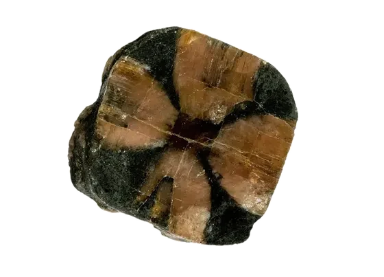

Mineral Grimoire
 Chiastolite
Chiastolite
Chiastolite is a variety of andalusite distinguished by its naturally occurring cross-shaped graphite inclusions, formed when crystal growth during metamorphism pushes carbon particles to the edges of the growing crystal, concentrating them into geometric patterns at the interfaces. This phenomenon occurs in schist and gneiss at convergent plate boundaries, and the resulting stones have been prized as protective talismans for centuries.
Chiastolite's Journey to You
Among the most visually striking minerals in the geological record, chiastolite carries the imprint of metamorphic forces within its very structure. The dark cross embedded in each stone is not a surface marking but an intrinsic feature, a record of the pressures and transformations the mineral underwent deep within the Earth. Because of this cross formation, people across many cultures and time periods have collected and carried these stones as powerful guardians against harm and deception.
Crystal Healing with Chiastolite
Chiastolite activates the Root Chakra, anchoring the practitioner in the grounding medicine of the earth element and establishing a foundation of protection and peace. Placed here, it opens a channel to ancestral wisdom, inviting the guidance of those who came before into your practice. It also cultivates a deep sense of belonging and settledness within your own life.
For the Beginner
- Provides a feeling of stability and support during ritual and magickal work, helping you remain grounded throughout the practice.
- Creates a protective energetic boundary around your sacred space, keeping it clear of unwanted intrusions or harmful outside influences.
- Nurtures the inner child, offering a sense of safety, comfort, and emotional security.
- Encourages contentment and well-being by helping you recognize and appreciate what you have already built and accomplished.
For the Advanced Practitioner
Chiastolite supports a conscious reckoning with the life-death-rebirth cycle, helping the practitioner hold both the reality of physical mortality and the continuity of the soul without fear or contradiction. It can be used to explore paranormal phenomena and to move across the veil in order to commune with ancestral spirits and receive their guidance. Chiastolite also invites deep self-examination, supporting the integration of the emotional, intellectual, spiritual, and collective dimensions of the self into a coherent and unified whole.
Chiastolite's Magickal Message for You
"You deserve to feel safe at all times. I will keep you deeply rooted in the energy and sustenance of Earth, bringing through the wisdom of the ancients to guide you on your path."
Partners Well With
Jet, Lemurian Quartz, Lodolite, Petrified Wood, Sugilite
Did You Know?
Chiastolite was first formally described in 1754, predating the scientific description of its parent mineral, andalusite, by 44 years.